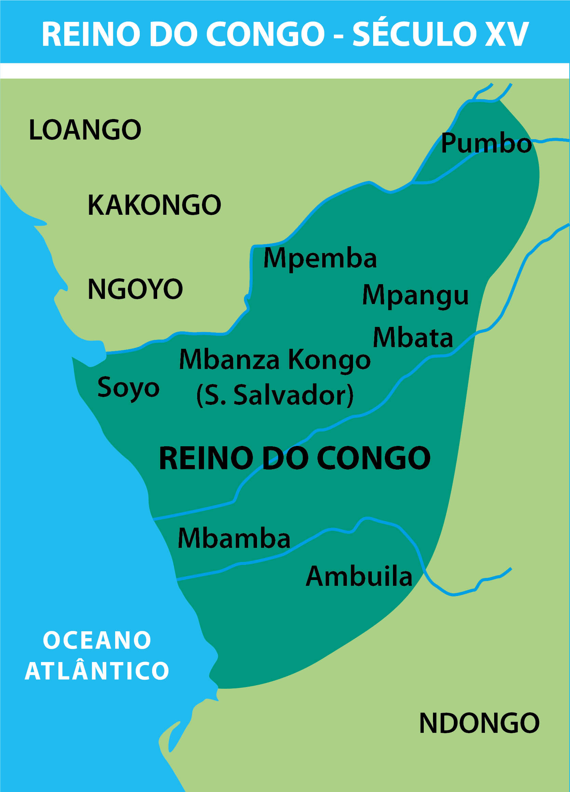
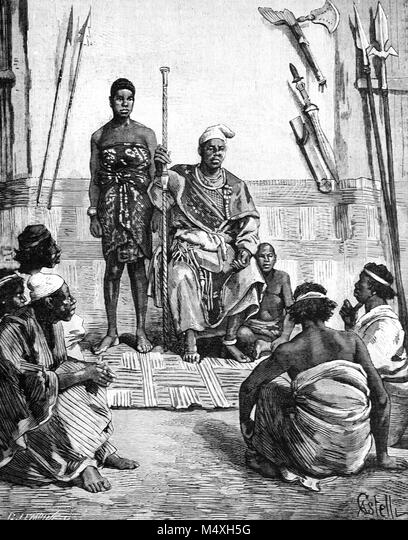
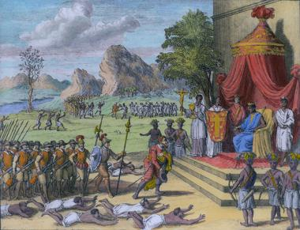

- Origem
Os Bakongo (ou BaKongo) são um povo bantu que habita principalmente a região do Baixo Congo , no oeste da África Central. Eles se distribuem hoje por três países: República Democrática do Congo, República do Congo e Angola (sobretudo na província do Zaire e parte do Uíge e Cabinda). A sua origem está intimamente ligada à formação e expansão do Reino do Kongo, um dos mais importantes e organizados impérios africanos pré-coloniais.
Os Bakongo fazem parte do grande grupo dos povos bantu, que migraram da região dos Grandes Lagos (atual zona entre Camarões, Uganda e Quénia) para o sul e oeste da África há cerca de 2.000 a 3.000 anos. Por volta do século XIII ou XIV, esses grupos bantu estabelecidos na bacia do rio Congo formaram um conjunto de pequenos reinos e chefaturas, que acabariam se unindo sob um único poder central — o Reino do Kongo. A sua capital era Mbanza Kongo (atual São Salvador do Congo, na R.D. do Congo).
👑 O Reino do Kongo
O Reino do Kongo foi fundado, segundo a tradição oral, por Lukeni lua Nimi, que unificou várias comunidades e linhagens bakongo. O reino abrangia um vasto território, incluindo partes do norte de Angola, Cabinda, o oeste da atual RDC e o sul da República do Congo.
O governante supremo era chamado de Manikongo, que detinha autoridade política, espiritual e simbólica sobre o povo. O reino tinha uma estrutura administrativa bem definida, com províncias governadas por nobres e chefes locais.
⛪ Contato com os europeus
Em 1483, o explorador português Diogo Cão chegou à foz do rio Congo e estabeleceu contato com o Reino do Kongo. Logo depois, o Manikongo Nzinga a Nkuwu converteu-se ao cristianismo, adotando o nome Dom João I. O seu filho, Afonso I (Nzinga Mbemba), reforçou a aliança com os portugueses e promoveu a educação e o cristianismo no reino.
Apesar disso, as relações acabaram se deteriorando devido ao tráfico de escravos, que enfraqueceu o reino e gerou divisões internas.
🌍 Distribuição atual e cultura
Hoje, os Bakongo mantêm uma identidade cultural forte, com uma língua comum — o kikongo — e práticas tradicionais ligadas à ancestralidade, à espiritualidade e à música (como os cânticos e tambores rituais).
A sociedade bakongo é tradicionalmente matrilinear, e a espiritualidade gira em torno do conceito de "nkisi", forças espirituais que protegem e regulam o equilíbrio entre o mundo dos vivos e dos ancestrais.
- culturas
As culturas e os hábitos do povo Bakong são muito ricos e cheios de simbolismo. Eles refletem uma forma de ver o mundo profundamente espiritual, comunitária e ligada à natureza e aos ancestrais.
🧭1. Visão do mundo (Cosmovisão)
Os Bakongo têm uma visão cíclica da vida, onde o mundo dos vivos e o mundo dos mortos estão em constante relação.
O universo é dividido em dois planos:
- - Nseke (mundo dos vivos)
- - Mpemba (mundo dos ancestrais / espíritos)
O símbolo central dessa filosofia é o“dikenga (ou cruz cósmica do Kongo), que representa o ciclo da vida — nascimento, maturidade, morte e renascimento. Para os Bakongo, a morte não é o fim, mas uma passagem para outra dimensão.
🧙🏾♂️2. Religião e espiritualidade
A espiritualidade bakongo baseia-se no culto aos ancestrais (bakulu) e nas forças espirituais chamadas “nkisi”.
- - Nkisi (plural minkisi): São objetos sagrados (como estatuetas, conchas, ervas ou metais) que guardam poderes espirituais e servem para proteger, curar ou fazer justiça.
- - Nganga: O curandeiro ou sacerdote tradicional que sabe manipular os nkisi e comunicar com o mundo espiritual. Há também a crença em um Deus supremo chamado Nzambi a Mpungu, criador de tudo.
Com o tempo, muitos Bakongo tornaram-se cristãos (católicos ou protestantes), mas mantendo práticas tradicionais — um exemplo clássico do sincretismo religioso.
🏠 3. Estrutura social e familiar
A sociedade bakongo é matrilinear, ou seja, a herança e o clã são transmitidos pela linha da mãe.
- - A família é extensa e organizada em linhagens (kanda).
- - O tio materno (irmão da mãe) tem grande autoridade sobre os sobrinhos.
- - A solidariedade comunitária é um valor central: todos ajudam nos casamentos, nas colheitas e nos rituais.
Os anjos da casa, ou espíritos protetores da família, são frequentemente honrados com oferendas simples (bebida, comida, cânticos).
👗 4. Vestuário e estética
Tradicionalmente, os Bakongo usavam roupas feitas com fibra de ráfia (tecido vegetal) e adornos de missangas, cobre ou conchas. Hoje, combinam vestimentas modernas com elementos culturais — especialmente nas festas e rituais.
O corpo e o cabelo podem ser pintados com argila branca (mpemba), símbolo de pureza e ligação com o mundo espiritual.
💍 5. Casamento e rituais de passagem
O casamento ( nsanda ) é um acordo entre famílias, não apenas entre duas pessoas. Envolve:
- - pagamento de dote (mahumbu) à família da noiva,
- - cerimónias de bênção dos ancestrais,
Os rituais de passagem — nascimento, iniciação, casamento e morte — marcam as fases do ciclo da vida, de acordo com o símbolo do dikenga.
- Arte
A arte do povo Bakongo é uma das mais simbólicas e espirituais de toda a África Central. Ela não é apenas “decorativa”, mas profundamente religiosa, filosófica e social: cada forma, cor e gesto tem um significado ligado à vida, à morte, aos ancestrais e ao poder espiritual (nkisi).
Vamos explorar os principais aspetos:
🎨 1. Função da arte bakongo
Para os Bakongo, arte é espiritualidade materializada. Ela serve para comunicar com o mundo invisível — os espíritos dos antepassados (bakulu) e as forças sagradas (minkisi).
Assim, as obras de arte são instrumentos de poder e proteção, não simples objetos estéticos. Muitas esculturas e máscaras são usadas em rituais religiosos, curativos, de justiça ou de iniciação.
🗿 2. Escultura (Nkisi e figuras de poder)
A escultura é o elemento mais conhecido da arte bakongo, especialmente as figuras chamadas Nkisi Nkondi.
Os Nkisi Nkondi são:
- - Estatuetas de madeira com pregos, lâminas ou espinhos cravados no corpo.
- - Cada pregos representa um juramento, pedido ou pacto espiritual.
- - Dentro ou atrás da figura há uma cavidade com substâncias sagradas (ervas, ossos, pó, metais), preparadas por um sacerdote (nganga).
- - pagamento de dote (mahumbu) à família da noiva,
- - Servem para proteger a comunidade, curar doenças, castigar mentirosos ou inimigos.
Estas figuras são tão importantes que se tornaram ícones da arte africana em museus de todo o mundo (como o Museu do Quai Branly, em Paris, e o Metropolitan, em Nova Iorque).
🪶 3. Máscaras rituais
Embora os Bakongo usem menos máscaras do que outros povos bantu (como os Chokwe ou Pende), elas ainda têm papéis rituais fortes. Representam espíritos ancestrais ou figuras míticase são usadas em cerimónias de iniciação, funerais e rituais de purificação.
As cores têm significados simbólicos:
- - Branco (mpemba) → mundo espiritual, pureza, morte.
- - Vermelho → energia vital, sangue, força.
- - Preto → poder, maturidade, ligação à terra.
As máscaras ajudam o dançarino a incorporar o espírito que representa, transformando-se num intermediário entre o visível e o invisível.
🏺 4. Arte utilitária e decorativa
Os Bakongo também expressam arte no quotidiano:
- - Cestos, panelas, colares, bastões, instrumentos musicais e tecidos são ornamentados com padrões geométricos e símbolos espirituais.
- - O tecido de ráfia (feito com fibras vegetais) era antigamente usado como vestimenta cerimonial e até como moeda de troca.
- - Os bastões de autoridade (mvwala) eram esculpidos com figuras que representavam o poder do chefe ou ancestral do clã.
🌀 5. Simbolismo e filosofia visual
A arte bakongo reflete a sua filosofia do Dikenga (ou cruz cósmica do Kongo), um dos símbolos mais antigos da África Central.
O Dikenga representa:
- - O ciclo da vida (nascimento, maturidade, morte, renascimento);
- - A ligação entre o mundo dos vivos e o dos mortos;
- - O movimento do sol (leste → nascente da vida; oeste → morte e passagem espiritual).
Muitos objetos artísticos têm esta forma cruzada, espiralada ou circular, mostrando essa ideia de equilíbrio e continuidade.
🎶 6. Música e arte performativa
A arte não é só visual — é também música, dança e performance.
Nos rituais, os cânticos e tambores são considerados formas de arte espiritual:
- - Os tambores ngoma “falam” através de ritmos codificados.
- - As danças rituais expressam estados espirituais e momentos da vida.
- - Os cânticos são uma forma de louvar os ancestrais e reforçar a coesão social.
Os rituais de passagem — nascimento, iniciação, casamento e morte — marcam as fases do ciclo da vida, de acordo com o símbolo do dikenga.